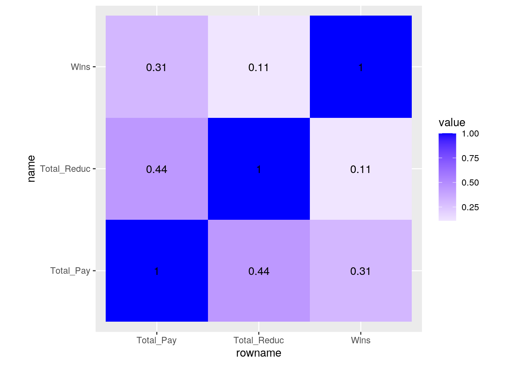
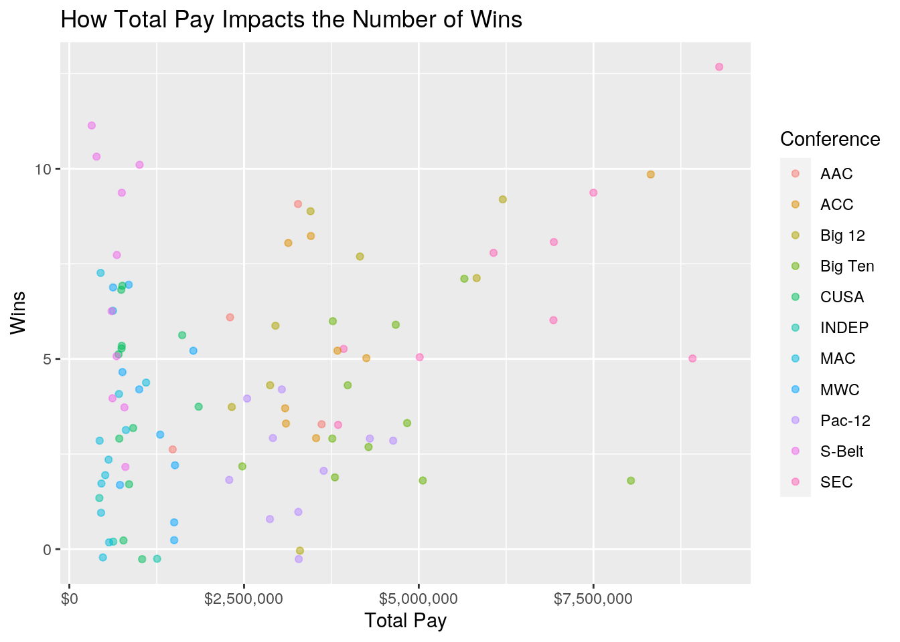
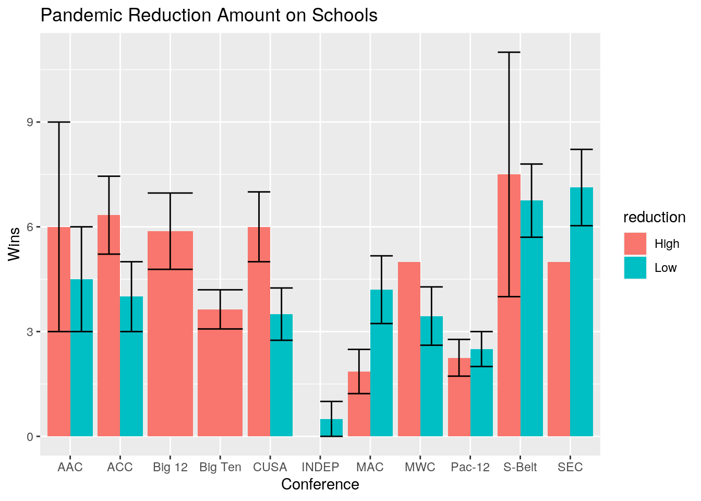
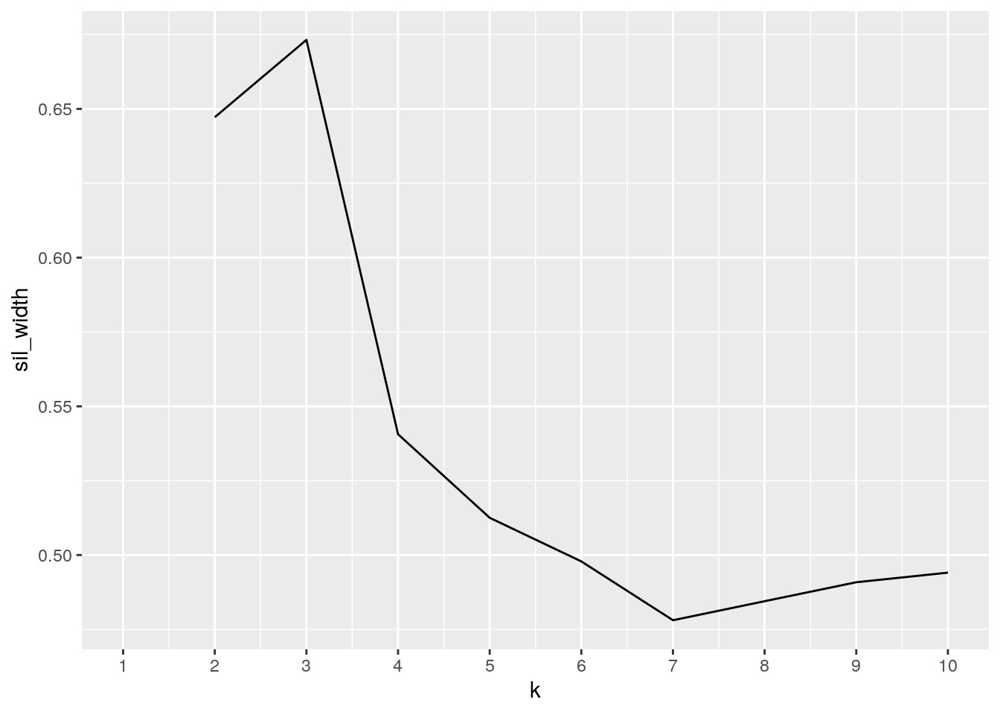
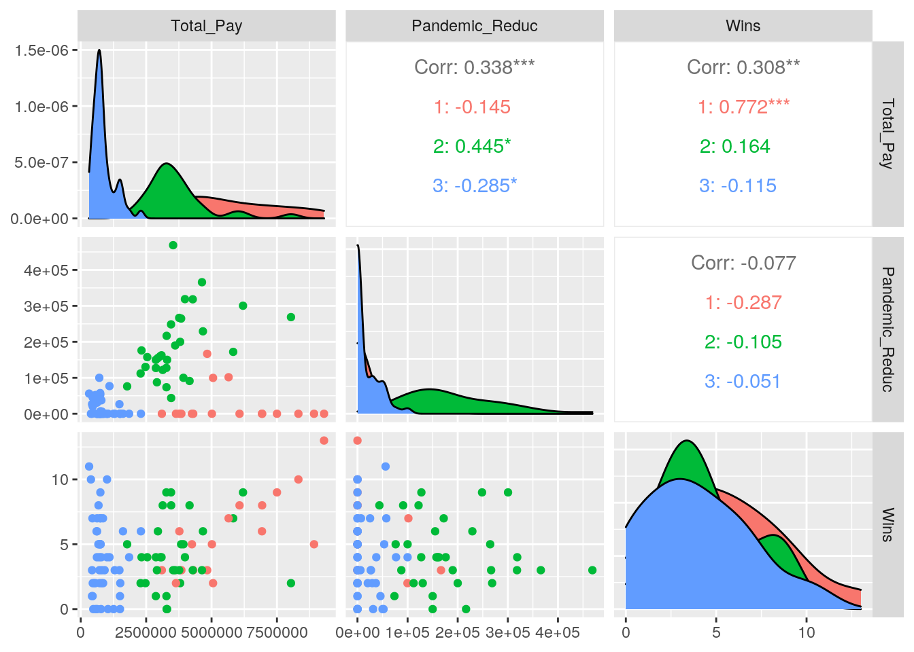

knitr::opts_chunk$set(echo = TRUE, eval = TRUE, fig.align = "center", warning = F, message = F,
tidy=TRUE, tidy.opts=list(width.cutoff=60), R.options=list(max.print=100))I chose two datasets related to sports because sports are one of my main interests and one of my favorite statistics categories to study. Due to all the recent coaching changes at The University of Texas and other programs, I thought it would be interesting to study coaching salaries in college sports and study it alongside the number of wins a program had for the 2020 season. I used one dataset with the payment statistics for the head football coaches for each NCAA football team and another dataset that listed the number of wins for each of these teams. I chose the common joined variable to be ‘School’ because I was curious to see if the schools with the highest paid football coaches also had the greatest number of wins. I predicted that there would be a direct relationship between the school and number of wins. The Coach dataset contains information about pay, buyout pay, and COVID reductions. The second set, Records, had only two variables: “School” and “Wins.”
library(tidyverse)## ── Attaching packages ─────────────────────────────────────── tidyverse 1.3.0 ──## ✓ ggplot2 3.3.3 ✓ purrr 0.3.4
## ✓ tibble 3.0.4 ✓ dplyr 1.0.2
## ✓ tidyr 1.1.2 ✓ stringr 1.4.0
## ✓ readr 1.4.0 ✓ forcats 0.5.0## ── Conflicts ────────────────────────────────────────── tidyverse_conflicts() ──
## x dplyr::filter() masks stats::filter()
## x dplyr::lag() masks stats::lag()library(dplyr)
Coach <- read.csv("~/Coach.csv") %>% na.omit() %>% mutate_all(type.convert) %>% mutate_if(is.factor,as.character)
Records <- read.csv("~/Records.csv") %>% na.omit() %>% mutate_all(type.convert) %>% mutate_if(is.factor,as.character)Since both datasets were already tidy, meaning each variable has its own column and each observation is on its own row, code was run to untidy them. This was done by making the datasets wider using pivot_wider(). For example, on the Coaches dataset, when pivot_wider() was used, each unique school was listed as its own column, and the values for Scheduled_Pay were dispersed. In order to make the set easier to navigate and read, it was re-tidied using pivot_longer(). This combined each individual school name under one column titled “School” and each pay value under one column titled “Scheduled_Pay.” The same functions were performed for the Records dataset.
untidyCoach <- Coach %>% pivot_wider(names_from = School, values_from = Scheduled_Pay)
head(untidyCoach)## # A tibble: 6 x 105
## Rank Conference Coach Pandemic_Reduc Actual_Pay Total_Pay Total_Reduc Buyout
## <int> <chr> <chr> <int> <int> <int> <int> <int>
## 1 1 SEC Nick… 0 9100000 9300000 0 3.68e7
## 2 2 SEC Ed O… 0 8687500 8918500 0 2.38e7
## 3 3 ACC Dabo… 0 8258575 8319775 1250000 5.00e7
## 4 4 Big Ten Jim … 268721 7785279 8036179 554584 6.37e6
## 5 5 SEC Jimb… 0 7500000 7500000 0 5.31e7
## 6 6 SEC Kirb… 0 6803600 6933600 0 1.98e7
## # … with 97 more variables: Alabama <int>, `Louisiana State` <int>,
## # Clemson <int>, Michigan <int>, `Texas A&M` <int>, Georgia <int>,
## # Auburn <int>, Oklahoma <int>, Florida <int>, Texas <int>, `Ohio
## # State` <int>, `Michigan State` <int>, Kentucky <int>, Nebraska <int>,
## # Iowa <int>, Utah <int>, UCLA <int>, Minnesota <int>, `Virginia Tech` <int>,
## # `Oklahoma State` <int>, Wisconsin <int>, Missouri <int>, Tennessee <int>,
## # Virginia <int>, Illinois <int>, Indiana <int>, Rutgers <int>, `Arizona
## # State` <int>, Houston <int>, `Florida State` <int>, `North Carolina` <int>,
## # `Iowa State` <int>, Kansas <int>, Arizona <int>, California <int>,
## # Cincinnati <int>, `NC State` <int>, `Georgia Tech` <int>, Louisville <int>,
## # Colorado <int>, `West Virginia` <int>, Washington <int>, `Texas
## # Tech` <int>, `Washington State` <int>, Oregon <int>, Maryland <int>,
## # `Kansas State` <int>, `Central Florida` <int>, `Oregon State` <int>, `North
## # Texas` <int>, `Boise State` <int>, UAB <int>, Wyoming <int>, `Colorado
## # State` <int>, UNLV <int>, `East Carolina` <int>, `Fresno State` <int>,
## # Connecticut <int>, Toledo <int>, `Florida International` <int>, `UL
## # Lafayette` <int>, `San Diego State` <int>, `Middle Tennessee` <int>,
## # Charlotte <int>, `San Jose State` <int>, `Central Michigan` <int>, `Texas
## # State` <int>, `Arkansas State` <int>, `Old Dominion` <int>, Hawaii <int>,
## # Marshall <int>, `Appalachian State` <int>, `Florida Atlantic` <int>,
## # `Western Kentucky` <int>, `Texas-San Antonio` <int>, `New Mexico` <int>,
## # `Texas El Paso` <int>, `Western Michigan` <int>, `Louisiana Tech` <int>,
## # `Georgia Southern` <int>, Troy <int>, Massachusetts <int>, Nevada <int>,
## # Buffalo <int>, `South Alabama` <int>, `Georgia State` <int>, `Northern
## # Illinois` <int>, Ohio <int>, `Miami (Ohio)` <int>, `Bowling Green` <int>,
## # `Eastern Michigan` <int>, Akron <int>, `Ball State` <int>, `Kent
## # State` <int>, `New Mexico State` <int>, `UL Monroe` <int>, `Coastal
## # Carolina` <int>tidyCoach <- untidyCoach %>% pivot_longer(cols=c(9:105), names_to="School", values_to = "Scheduled_Pay") %>% na.omit
head(tidyCoach)## # A tibble: 6 x 10
## Rank Conference Coach Pandemic_Reduc Actual_Pay Total_Pay Total_Reduc Buyout
## <int> <chr> <chr> <int> <int> <int> <int> <int>
## 1 1 SEC Nick… 0 9100000 9300000 0 3.68e7
## 2 2 SEC Ed O… 0 8687500 8918500 0 2.38e7
## 3 3 ACC Dabo… 0 8258575 8319775 1250000 5.00e7
## 4 4 Big Ten Jim … 268721 7785279 8036179 554584 6.37e6
## 5 5 SEC Jimb… 0 7500000 7500000 0 5.31e7
## 6 6 SEC Kirb… 0 6803600 6933600 0 1.98e7
## # … with 2 more variables: School <chr>, Scheduled_Pay <int>untidyRecords <- Records %>% pivot_wider(names_from = School, values_from = Wins)
head(untidyRecords)## # A tibble: 1 x 130
## Alabama `Louisiana Stat… Clemson Michigan `Texas A&M` Georgia Auburn Oklahoma
## <int> <int> <int> <int> <int> <int> <int> <int>
## 1 13 5 10 2 9 8 6 9
## # … with 122 more variables: `Texas Christian` <int>, Florida <int>,
## # Texas <int>, `Ohio State` <int>, Northwestern <int>, `Michigan
## # State` <int>, Kentucky <int>, `Mississippi State` <int>, Nebraska <int>,
## # Stanford <int>, Iowa <int>, Utah <int>, `Southern California` <int>, `South
## # Carolina` <int>, UCLA <int>, Minnesota <int>, `Virginia Tech` <int>,
## # `Oklahoma State` <int>, Pittsburgh <int>, Wisconsin <int>, Missouri <int>,
## # Tennessee <int>, Virginia <int>, Illinois <int>, Indiana <int>,
## # Mississippi <int>, Rutgers <int>, `Arizona State` <int>, Houston <int>,
## # Vanderbilt <int>, `Florida State` <int>, `North Carolina` <int>, `Iowa
## # State` <int>, Kansas <int>, Arizona <int>, California <int>,
## # Cincinnati <int>, Syracuse <int>, `NC State` <int>, `Georgia Tech` <int>,
## # Louisville <int>, Colorado <int>, `West Virginia` <int>, Washington <int>,
## # Arkansas <int>, `Texas Tech` <int>, `Washington State` <int>, Duke <int>,
## # Oregon <int>, Maryland <int>, `Kansas State` <int>, Navy <int>, `Wake
## # Forest` <int>, `Central Florida` <int>, `Oregon State` <int>, `South
## # Florida` <int>, `Notre Dame` <int>, `North Texas` <int>, Tulane <int>,
## # `Boise State` <int>, Tulsa <int>, UAB <int>, Wyoming <int>, `Colorado
## # State` <int>, UNLV <int>, `East Carolina` <int>, `Southern
## # Methodist` <int>, Rice <int>, `Fresno State` <int>, Connecticut <int>,
## # Toledo <int>, `Florida International` <int>, `UL Lafayette` <int>, `San
## # Diego State` <int>, `Middle Tennessee` <int>, `Utah State` <int>,
## # Charlotte <int>, `San Jose State` <int>, `Central Michigan` <int>, `Texas
## # State` <int>, `Arkansas State` <int>, `Old Dominion` <int>, Hawaii <int>,
## # Marshall <int>, `Appalachian State` <int>, `Florida Atlantic` <int>,
## # `Western Kentucky` <int>, `Texas-San Antonio` <int>, `New Mexico` <int>,
## # `Texas El Paso` <int>, `Western Michigan` <int>, `Louisiana Tech` <int>,
## # `Georgia Southern` <int>, Troy <int>, Massachusetts <int>, Nevada <int>,
## # Buffalo <int>, `South Alabama` <int>, `Georgia State` <int>, `Northern
## # Illinois` <int>, …tidyRecords <- untidyRecords %>% pivot_longer(cols=c(1:130), names_to="School", values_to = "Wins") %>% na.omit
head(tidyRecords)## # A tibble: 6 x 2
## School Wins
## <chr> <int>
## 1 Alabama 13
## 2 Louisiana State 5
## 3 Clemson 10
## 4 Michigan 2
## 5 Texas A&M 9
## 6 Georgia 8The datasets were joined using the inner_join() function because the ‘Records’ dataset contains the number of wins from schools not included in the Coach dataset. Because of this, performing an inner_join() would only take the overlapping data from both datasets, or the schools listed in both sets. This resulted in 97 rows in the joined dataset. There were originally 130 rows in the Records dataset and 97 in the Coach dataset, meaning 33 rows were dropped from the Records set to match the schools of both.
joined <- Coach %>% inner_join(Records, by="School")
head(joined)## Rank School Conference Coach Scheduled_Pay Pandemic_Reduc
## 1 1 Alabama SEC Nick Saban 9100000 0
## 2 2 Louisiana State SEC Ed Orgeron 8687500 0
## 3 3 Clemson ACC Dabo Swinney 8258575 0
## 4 4 Michigan Big Ten Jim Harbaugh 8054000 268721
## 5 5 Texas A&M SEC Jimbo Fisher 7500000 0
## 6 6 Georgia SEC Kirby Smart 6803600 0
## Actual_Pay Total_Pay Total_Reduc Buyout Wins
## 1 9100000 9300000 0 36800000 13
## 2 8687500 8918500 0 23850000 5
## 3 8258575 8319775 1250000 50000000 10
## 4 7785279 8036179 554584 6367929 2
## 5 7500000 7500000 0 53125000 9
## 6 6803600 6933600 0 19835834 8The joined dataset was then edited summary statistics. First, any NAs were removed before selecting columnns that I deemed important for my project. I then wanted to focus on schools with a certain number of wins, so I used the filter function and selected for schools with 6 wins and arranged them by descending total pay. It was found that Auburn was the school that paid their coach the highest and had 6 wins. I then grouped this set by conference to see comparisons. The Big 10 had two schools ranked in the top three of pay for this set that had 6 wins, however, the Big 10 season had fewer games, so their win percentage is higher than other schools such as Auburn from the SEC.
library(dplyr)
joined2 <- joined %>% na.omit() %>% select(School,Conference,Total_Pay,Total_Reduc,Wins) %>% filter(Wins==6) %>% arrange(desc(Total_Pay)) %>% group_by(Conference) %>% mutate_if(is.character,tolower)## `mutate_if()` ignored the following grouping variables:
## Column `Conference`head(joined2)## # A tibble: 6 x 5
## # Groups: Conference [5]
## School Conference Total_Pay Total_Reduc Wins
## <chr> <chr> <int> <int> <int>
## 1 auburn SEC 6927589 0 6
## 2 iowa Big Ten 4670750 393000 6
## 3 indiana Big Ten 3770000 50000 6
## 4 west virginia Big 12 2950000 312500 6
## 5 central florida AAC 2300000 0 6
## 6 uab CUSA 1615000 0 6Next functions within summarize were performed. All the distinct values were totaled up for the first code. Next, the minimum and maximum values for the numeric columns were listed. The lowest a coach made was Jamey Chadwell from Coastal Carolina with $319,866 for the 2020 season, and the max a coach made was Nick Saban with 9.3 million. I thought it was interesting that the highest paid coach also had the highest number of wins, and the lowest paid coach still had 11 wins.
joined %>% summarize_all(n_distinct)## Rank School Conference Coach Scheduled_Pay Pandemic_Reduc Actual_Pay
## 1 97 97 11 97 81 52 93
## Total_Pay Total_Reduc Buyout Wins
## 1 95 52 94 13joined %>% summarize_if(is.numeric, list(min=min,max=max), na.rm=T)## Rank_min Scheduled_Pay_min Pandemic_Reduc_min Actual_Pay_min Total_Pay_min
## 1 1 375000 0 318966 319866
## Total_Reduc_min Buyout_min Wins_min Rank_max Scheduled_Pay_max
## 1 0 0 0 119 9100000
## Pandemic_Reduc_max Actual_Pay_max Total_Pay_max Total_Reduc_max Buyout_max
## 1 468750 9100000 9300000 1250000 53125000
## Wins_max
## 1 13joined %>% summarize_if(is.numeric, list(Q3=quantile), probs=.75, na.rm=T)## Rank_Q3 Scheduled_Pay_Q3 Pandemic_Reduc_Q3 Actual_Pay_Q3 Total_Pay_Q3
## 1 94 4e+06 127167 3800000 3800000
## Total_Reduc_Q3 Buyout_Q3 Wins_Q3
## 1 247500 15416667 6joined %>% summarize(mean(Total_Pay, na.rm=T))## mean(Total_Pay, na.rm = T)
## 1 2630140The heatmap below shows the correlation between the three variables: the number of wins a team had, the total pay the head coach received for that team, as well as the total reduction of pay due to the pandemic. I predicted that a pay reduction would have a low correlation with the number of wins a team had. I also predicted that the total pay of a coach would have a greater correlation with the number of wins. The heatmap concludes that the total pay a coach received correlated to the reduction. This makes sense because the more a coach makes, the more likely they took some percentage of a paycut during this most recent season. My prediction that the number of wins would not be greatly affected by the pay reduction was correct in that it was only 0.11. Lastly, the total amount a coach was paid had a slight correlation with the number of wins, being 0.31.
library(ggplot2)
library(tidyverse)
# HEATMAP:
joined %>% select(Total_Pay,Total_Reduc,Wins) %>% cor %>% as.data.frame %>% rownames_to_column %>% pivot_longer(-1) %>% ggplot(aes(rowname,name,fill=value)) + geom_tile() + geom_text(aes(label=round(value,2))) + coord_fixed() + scale_fill_gradient2(low="red",mid="white",high="blue")
The scatterplot shows the relationship between the total pay a coach received for the 2020 season and the number of wins that team had. Each point represents a school, and each point is labeled by what conference that school belongs to. From the map, it is easy to pick out Alabama as the top right point since they have the highest paid coach and had the most wins, 13. It also shows the relationship between how much each conference pays their coaches. For example, the blue points represent the Mountain West Conference and are all located towards the left end of the x-axis, meaning most coaches are paid less than 2.5 million per year. One error that could skew this graph is that certain schools played fewer games due to the pandemic. For example, Ohio State won nearly 90% of their games, but since they only played eight, it appears as though they lost more. This experiment could be improved by doing the percentage of wins a team had rather than just the number.
# Plot 1
ggplot(joined, aes(x=Total_Pay, y=Wins)) +
geom_jitter(alpha=.5, aes(color=Conference)) + ggtitle("How Total Pay Impacts the Number of Wins")+
labs(y= "Wins", x = "Total Pay") + scale_x_continuous(labels=scales::dollar)
The reduction that coaches took in pay for the 2020 season was categorized as a new variable as either low or high. This was then factored into the barplot below that lists each conference and the average number of wins. This category is labeled by the two colors. The schools in each conference are plotted next to one another showing the average number of wins for the schools that had a high pay reduction and those that had a low pay reduction. The standard error bar shows the lowest number of wins and the highest number of wins. From this, it is concluded that the Big 12 and Big 10 had high rates of reduction, but they still had around the same average number of wins as confrences such as the ACC and SEC, which had fewer reductions. It was also interesting that schools that had a high pay reduction still averaged more wins than the schools that had a low pay reduction in their conference. This shows that pay did not have an effect on a coach’s motivation to do their job!
# Plot 2
joined$reduction <- ifelse(joined$Total_Reduc < median(joined$Total_Reduc), "Low", "High")
str(joined)## 'data.frame': 97 obs. of 12 variables:
## $ Rank : int 1 2 3 4 5 6 7 8 10 11 ...
## $ School : chr "Alabama" "Louisiana State" "Clemson" "Michigan" ...
## $ Conference : chr "SEC" "SEC" "ACC" "Big Ten" ...
## $ Coach : chr "Nick Saban" "Ed Orgeron" "Dabo Swinney" "Jim Harbaugh" ...
## $ Scheduled_Pay : int 9100000 8687500 8258575 8054000 7500000 6803600 6900000 6507143 6070000 6000000 ...
## $ Pandemic_Reduc: int 0 0 0 268721 0 0 0 300417 0 172083 ...
## $ Actual_Pay : int 9100000 8687500 8258575 7785279 7500000 6803600 6900000 6202726 6070000 5827917 ...
## $ Total_Pay : int 9300000 8918500 8319775 8036179 7500000 6933600 6927589 6202726 6070000 5827917 ...
## $ Total_Reduc : int 0 0 1250000 554584 0 0 0 515000 0 516250 ...
## $ Buyout : int 36800000 23850000 50000000 6367929 53125000 19835834 21450000 30974666 12000000 15416667 ...
## $ Wins : int 13 5 10 2 9 8 6 9 8 7 ...
## $ reduction : chr "Low" "Low" "High" "High" ...ggplot(joined, aes(x = Conference, y = Wins, fill=reduction))+
geom_bar(stat="summary", position="dodge")+
geom_errorbar(stat="summary", fun.data=mean_se, position="dodge") + ggtitle("Pandemic Reduction Amount on Schools")+
labs(y= "Wins", x = "Conference")## No summary function supplied, defaulting to `mean_se()`
After testing to see how many clusters were formed with all the numeric variables, it was found that three were made between total pay, pandemic reduction, and wins. There is a slight correlation between the number of wins and total pay a coach received, which is also evident in the graphs of the visualization section. There appeared to be a negative correlation between the reduction in pay and the number of wins, meaning that a pay cut did not have a major effect on the number of wins for a team.
library(cluster)
pam_dat<-joined%>%select(Scheduled_Pay, Total_Pay, Pandemic_Reduc, Buyout, Actual_Pay, Wins, Total_Reduc)
sil_width<-vector()
for(i in 2:10){
pam_fit <- pam(pam_dat, k = i)
sil_width[i] <- pam_fit$silinfo$avg.width
}
ggplot()+geom_line(aes(x=1:10,y=sil_width))+scale_x_continuous(name="k",breaks=1:10)## Warning: Removed 1 row(s) containing missing values (geom_path).
pam1 <- joined %>% select("Scheduled_Pay", "Total_Pay", "Pandemic_Reduc", "Buyout", "Actual_Pay", "Wins", "Total_Reduc") %>% scale %>% pam(k=3)
pam1## Medoids:
## ID Scheduled_Pay Total_Pay Pandemic_Reduc Buyout Actual_Pay
## [1,] 13 1.0494430 1.0855608 -0.7273922 1.265025464 1.1010222
## [2,] 39 0.2559627 0.2083074 0.8789644 -0.004213369 0.2192893
## [3,] 66 -0.8481085 -0.8294486 -0.6680806 -0.715448159 -0.8311831
## Wins Total_Reduc
## [1,] 0.2097725 -0.6725773
## [2,] -0.1351077 0.8555183
## [3,] -0.4799880 -0.6443663
## Clustering vector:
## [1] 1 1 1 2 1 1 1 2 1 2 1 1 1 1 2 2 1 2 1 2 2 2 1 2 2 1 2 1 2 2 2 2 2 2 2 2 2 1
## [39] 2 2 2 2 2 2 2 2 2 3 2 3 2 3 3 3 3 3 3 3 3 3 3 3 3 3 3 3 3 3 3 3 3 3 3 3 3 3
## [77] 3 3 3 3 3 3 3 3 3 3 3 3 3 3 3 3 3 3 3 3 3
## Objective function:
## build swap
## 1.585162 1.462927
##
## Available components:
## [1] "medoids" "id.med" "clustering" "objective" "isolation"
## [6] "clusinfo" "silinfo" "diss" "call" "data"plot(pam1,which=3)library(GGally)## Registered S3 method overwritten by 'GGally':
## method from
## +.gg ggplot2joined %>% mutate(cluster=as.factor(pam1$clustering)) %>% ggpairs(columns = c("Total_Pay", "Pandemic_Reduc", "Wins"), aes(color=cluster)) 